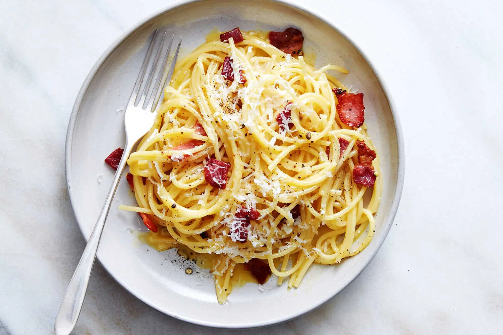

Home
Pasta Carbonara

This dish will make your days great.
Pasta Carbonara is one of the favorite dish of our web visitor
Ingredients
This ingredients are for a 8 servings
- 1/2 pound bacon , cut into small pieces
- 4 Large Egss, at room temperature
- 1/4 cup heavy cream , at room temperature
- 1 cup grated Parmesan cheese
- 16 onces dry pasta of your preference
- 1/4 cup
butter , softened
- 1/4 chopped parsley
- ground black pepper to taste
Steps
- Cook and stir bacon in a large skillet over medium-high heat until evenly browned and crisp, about 10 minutes. Drain on a paper towel-lined plate and set aside.
- Beat together eggs and cream in a medium bowl until just blended. Stir in Parmesan cheese and set aside.
- Fill a large pot with lightly salted water and bring to a rolling boil. Cook pasta in boiling water until tender yet firm to the bite, about 8 minutes. Drain and return pasta to the pot.
- Add softened butter to the pot and toss with pasta until butter is melted. Add bacon and egg-cheese mixture. Stir until the heat of pasta cooks eggs, then garnish with parsley and black pepper to serve.